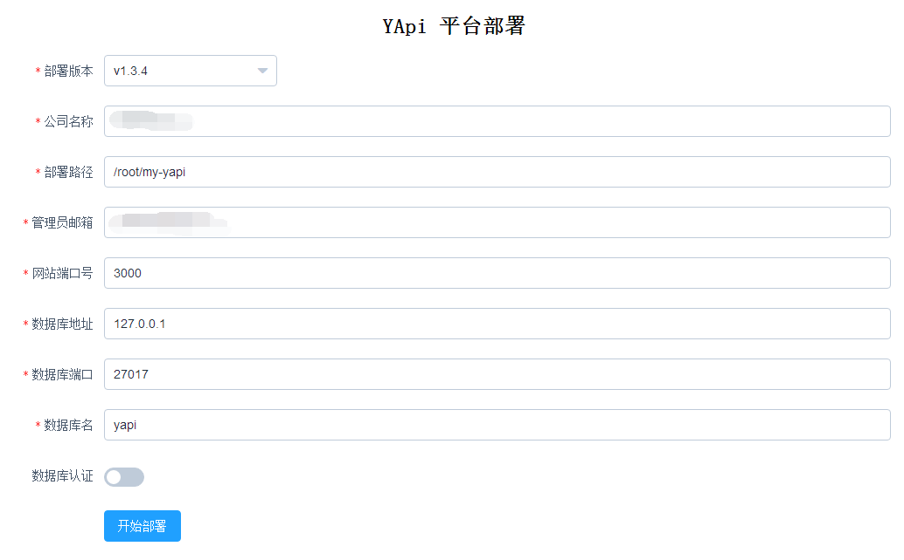
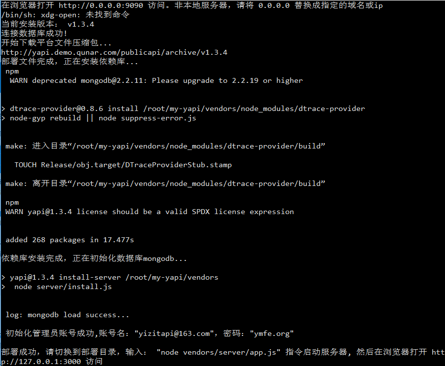

一、在线安装
1、安装nodejs
2、安装mongodb
1 | # 添加yum源 |
3、安装Yapi
官方说明：https://yapi.ymfe.org/devops/index.html
方式一：可视化部署
1 | $ npm install -g yapi-cli --registry https://registry.npm.taobao.org |

根据提示，浏览器访问 http://部署YApi服务器的IP:9090。

填写完信息后，点击“开始部署”。（大概等待1分钟）

退出当前状态
CTRL + C
修改配置
这里我们不急着根据提示进行启动，有些参数我们可以通过修改配置达到。
1 | #修改config.json |
启动
切换到部署目录下
cd /root/my-yapi
启动服务
1 | $ node vendors/server/app.js |
由于修改了配置，所以直接访问 http://部署YApi服务器的IP/login。
访问http://部署YApi服务器的IP:3000/login
默认用户密码：admin@admin.com ymfe.org
方式二：命令行部署
安装yapi
1 | $ mkdir yapi |
安装pm2
1 | $ cd vendors |
初始化及启动yapi
1 | $ npm run install-server //安装程序会初始化数据库索引和管理员账号，管理员账号名可在 config.json 配置 |
使用pm2启动方式
1 | # 启动 |
二、离线安装
离线安装只能采用命令行部署方式
node安装
不再详述。
内网安装mongodb
解压mongodb-linux-x86_64-3.6.4.tgz并放入mongodb文件夹中
1 | $ tar -zxvf mongodb-linux-x86_64-3.6.4.tgz |
把mongodb放入环境变量中, 修改~/.bashrc, 加入以下内容
1 | export PATH=<mongodb文件夹的路径>/bin:$PATH |
验证安装
1 | $ source ~/.bashrc |
创建dbdata/db文件夹和dblog文件夹(请自行确保这些文件夹的读写权限)
1 | $ mkdir -p dbdata/db |
启动mongodb服务
1 | $ sudo ./mongodb/bin/mongod --fork --dbpath ./dbdata --logpath ./dblog/log |
配置
参考上文mongodb配置。
离线安装yapi
在一台连接互联网的pc上安装node环境
在外网机器获取yapi源码并安装依赖
使用git获取yapi源码, 如果没有git命令请按照对应平台的安装方法安装git.
创建一个新文件夹yapi, 使用clone将yapi源码放入vendors中:
1 | $ mkdir yapi |
我这里还安装了pm2
1 | $ npm n install -S pm2 |
将创建的yapi文件夹打成压缩包得到yapi.tar.gz(其目录下有config.json和vendors)
1 | $ tar -czf yapi.tar.gz yapi |
至此, 所有需要外部网络的操作已经完成, 可以进行内网部署.
启动yapi
解压yapi.tar.gz
1 | $ tar -zxvf yapi.tar.gz |
按需要修改yapi/config.json中的相关配置(例如管理员账号等)
初始化数据库:
1 | $ cd ./yapi/vendors |
使用pm2启动
1 | $ npx n pm2 start ./server/app.js |
启动完成后即可尝试访问yapi看是否成功, 具体地址要根据内网机器的ip和在config.json中配置的端口号
如果要关闭yapi服务, 可以使用
1 | $ npx n pm2 stop all |
问题总结：
两种方式安装yapi,按照正常方式安装都是无法安装的，有如下错误
方式1图形界面，yapi server 启动9090服务后，页面无法打开，会报错误，原因是无网络。
方式2命令行安装，npm install –production 回报git错误，因需要联网git操作，原因无网络，npm使用私库代理也不行。
参考资料：
https://yapi.ymfe.org/devops/index.html
http://stlighter.github.io/2018/04/19/yapi%E7%A6%BB%E7%BA%BF%E9%83%A8%E7%BD%B2/